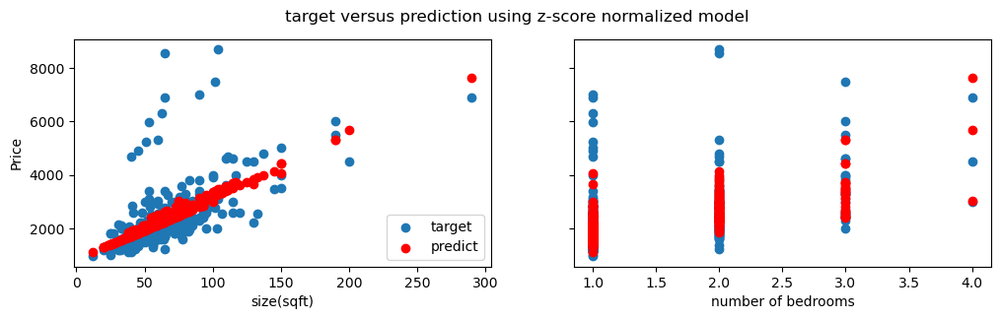
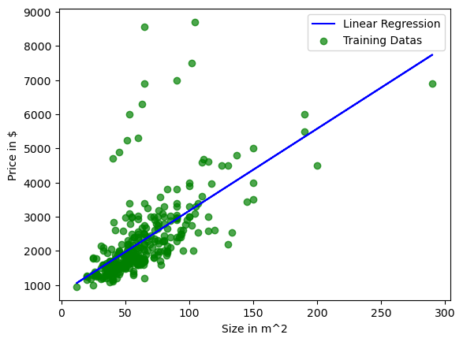

Scraping Stack and Data Dependencies
The scraper side depends on page collection, HTML parsing, regex cleanup, and MongoDB persistence.
requests downloads the HousingAnywhere Berlin result pages once, then the project works from local web1.html through web41.html files so parsing experiments are repeatable.bs4 reads each saved page and searches for listing information and price blocks through the original page attributes such as data-test-locator.re.findall extracts numeric size, bedroom, and price values from messy listing text before the records are inserted into the database.pymongo.MongoClient('localhost', 27017) connects to MongoDB and stores cleaned listing records in database houses, collection berlin.| Scraped Field | Extraction Source | Pipeline Role |
|---|---|---|
size | Property info text after splitting listing metadata | Main numerical feature for regression. |
number of bedrooms | Bedroom token from the listing metadata line | Second numerical feature for the multivariate model. |
price | Listing price block; numeric values extracted with regex | Regression target and comparison value for the decision bot. |
date | Availability text in the property info block | Context field stored for inspection, not used by the model. |
type of home | Home type text from listing metadata | Stored descriptive field; a future version could encode it as a feature. |
Saving Rental Pages for Offline Scraping
The first notebook downloads search-result pages, then keeps the raw HTML files as the project data layer.
import requests
def saving_pages():
for i in range(1, 42):
r = requests.get(
'https://housinganywhere.com/s/Berlin--Germany/'
'apartment-for-rent?page=%i' % (i)
)
with open('web%i.html' % i, 'wb+') as f:
f.write(r.content)
return
saving_pages()This is our data that are web pages which are scraped for storing our data. All datas are saved it as html to show you how scraped this in script.
Design choice: saving HTML before parsing made the scraping experiment repeatable without re-hitting the website every time. For a beginner project, this was a useful first step toward a real data pipeline.
BeautifulSoup Extraction and MongoDB Insert
The scraping notebook extracts size, bedroom count, price, date, and home type, then inserts each listing into MongoDB.
web1.html to web41.html and parses each file with BeautifulSoup.data-test-locator attributes.houses, collection berlin.houses_info_tag = soup.find_all(
'div',
attrs={'data-test-locator': 'ListingCardPropertyInfo'}
)
houses_price_tag = soup.find_all(
'div',
attrs={'data-test-locator': 'ListingCardInfoPrice'}
)
house_info_up = house_info.split('•')
size = (re.findall(r'\d+', house_info_up[1]))[0]
bedrooms = house_info_up[2][0]
date = house_info_up[3][5:]
price = re.findall(r'\d+', house_price)def connect_database():
conn = pymongo.MongoClient('localhost', 27017)
db = conn['houses']
collection = db['berlin']
return collection
def insert_in_mongodb(final_houses, collection):
for every in final_houses:
data = {}
data['size'] = every[0]
data['number of bedrooms'] = every[1]
data['price'] = every[2]
data['date'] = every[3]
data['type of home'] = every[4]
collection.insert_one(data)Regression Stack and Model Inventory
The modeling notebooks use a small scikit-learn stack, with MongoDB acting as the training-data source.
houses.berlin, so the model is trained from the same persisted data created by the scraping section.X and y arrays: X = [size, bedrooms] and y = price.sklearn.linear_model.LinearRegression provides both the size-only baseline and the multivariate model used by the notebook bots.matplotlib.pyplot creates the target-vs-prediction visuals that compare scraped prices with model predictions.StandardScaler appears in the training helper, but the saved code does not apply the scaled values before fitting; that is an honest legacy detail from the 2023 notebook.Target vs. Prediction Plots
The notebooks include basic visual checks for univariate and multivariate regression behavior.


What Each Notebook Contributes
The project is split into small notebooks, each acting like a primitive pipeline step or experiment.
| Notebook | Role | Key Output |
|---|---|---|
pages.ipynb | Downloads Berlin rental listing pages | 41 cached HTML pages |
insert_and_scraping.ipynb | Parses HTML and inserts records into MongoDB | Structured listings in houses.berlin |
univariate_regression.ipynb | Tests a size-only Linear Regression baseline | Example prediction: size 56 gives price 2117 |
plotting_data_vs_predict.ipynb | Plots target vs. prediction for both features | Two-panel diagnostic figure |
guessing_price_bot.ipynb | Interactive user-facing price estimate | Example: size 100, bedrooms 2 gives price 3183 |
expensive_detector.ipynb | Simple Logistic Regression classifier on prediction residuals | Flags whether a listing looks expensive by the scraped-data rule |
Prototype Libraries and Interaction Model
The first deployment-like layer is notebook-based, so its dependencies are the prompt interface, helper functions, MongoDB data, and fitted sklearn models.
input() prompts for size, bedrooms, and price. This is why the project is described as a first deployment-like attempt rather than a web deployment.linear_tools.py helpersShared helper functions connect to MongoDB, load training arrays, train Linear Regression, and call model prediction from the interactive notebooks.LinearRegression object; the decision bot adds LogisticRegression on top of regression-derived labels.| Prototype Piece | Model Input | User Output | Legacy Limitation |
|---|---|---|---|
Price guessing bot | House size and bedroom count | Estimated rental price from the multivariate regression model | Model is fitted inside the notebook run and has no saved artifact. |
Expensive detector | House size and offered price | Simple expensive/not-expensive message | The residual threshold is hand-made and not validated as a production classifier. |
Notebook flow | Local MongoDB records plus prompt inputs | Console-style interaction for a user | No API, frontend, Docker image, tests, or dependency lock file yet. |
Price Guessing Bot
The prediction notebook wraps the trained Linear Regression model with a small prompt-based interface.
input_size = input(
'What is your size of house that you want to know the price ?'
)
input_bedrooms = input(
'What is number of bedrooms that your building want to have ?'
)
predict_price(input_size, input_bedrooms, linear_model)What is your size of house that you want to know the price ? 100 What is number of bedrooms that your building want to have ? 2 Your predicted price is : 3183
Expensive House Detector
A simple Logistic Regression classifier labels listings based on how far actual price is from the linear prediction.
linear_model, y_pred_linear = linear_regression(X, y)
y_clsf = np.zeros_like(y)
for i in range(len(y_pred_linear)):
if y_linear[i] - y_pred_linear[i] < 800:
y_clsf[i] = 1
else:
y_clsf[i] = 0
log_reg = LogisticRegression()
log_reg.fit(X, y_clsf)Please insert size of the house you may consider: 100 Please insert price of it: 9000 oh by my data,I think its expencive!!!
Prototype takeaway: the classifier is simple and misspelled labels remain from the original notebook, but it shows the first attempt to turn regression output into a user-facing decision rule.
What This 2023 Attempt Teaches
The value of the project is its full beginner pipeline, not production polish.
| Aspect | What Worked | What Would Be Improved Today |
|---|---|---|
Scraping | Cached pages made parsing repeatable | Add robots/TOS review, request throttling, schema validation, and robust selectors. |
Database | MongoDB was used as the first persistent storage layer | Add unique keys, duplicate prevention, typed fields, and exportable datasets. |
Modeling | Linear Regression made the relationship interpretable | Add train/test split, error metrics, outlier handling, and stronger features. |
Deployment | Notebook prompts created a usable local prediction flow | Move to FastAPI or Streamlit, persist models, add tests, and package dependencies. |
Project Synthesis & Roadmap
A small but complete beginner system: scrape, store, train, visualize, and interact.
Project result: 41 Berlin rental pages were cached, parsed into 328 listing/price tag pairs, stored in MongoDB, and used for simple house-price regression notebooks.
2023 deployment result: the first deployment-like attempt was a notebook-driven local product: a price guessing bot and expensive-house detector that let a user enter listing details and receive a model response.
Future directions:
- Rebuild the scraper with validation, deduplication, and cleaner storage.
- Add proper metrics such as MAE, RMSE, train/test split, and residual plots.
- Expose the model through FastAPI or Streamlit instead of notebook prompts.
- Package MongoDB, scraper, and model service with Docker Compose.